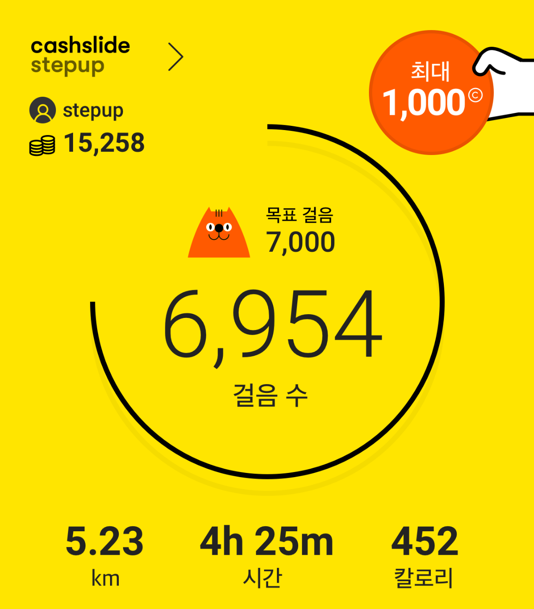
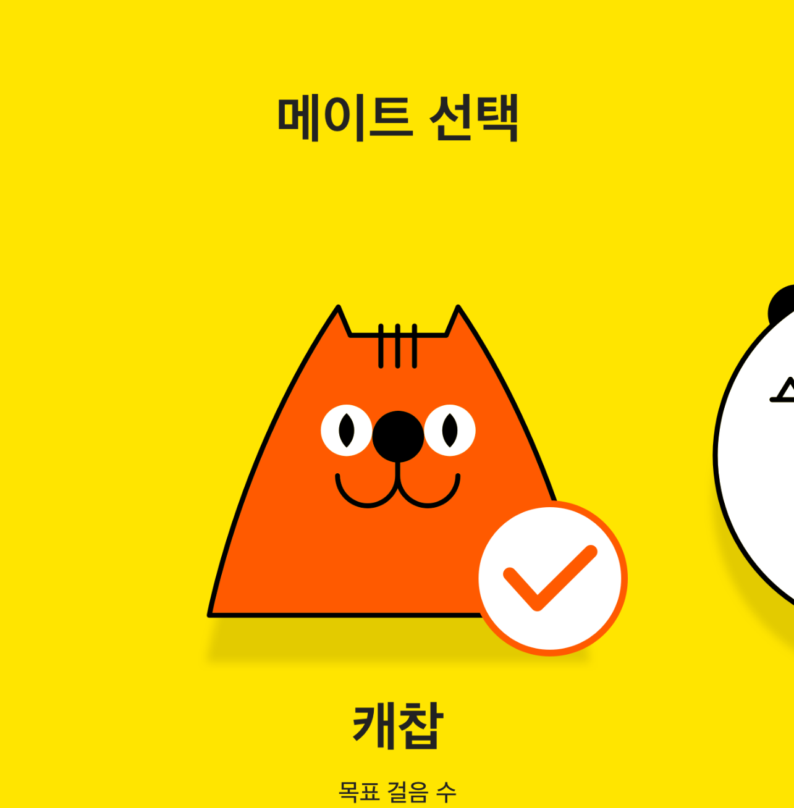
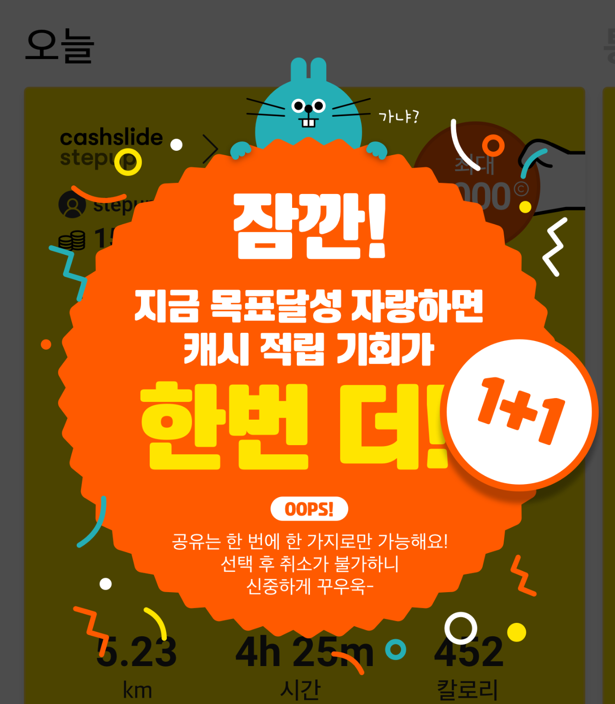
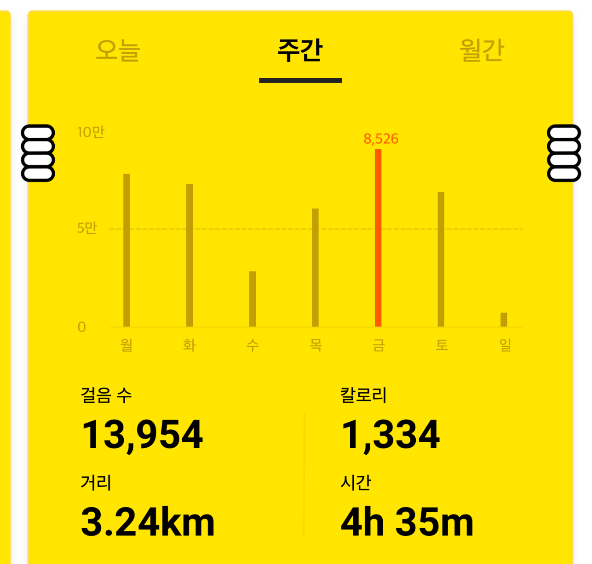

걸음 수를 기록하고,
걷는 만큼 보상하는 만보계
출발점은 걸음 수·거리·칼로리·시간을 확인하고 걷는 만큼 캐시를 제공하는 전형적인 만보기형 리워드 서비스였습니다.
걸음 수를 기록하는 기능보다, 사용자가 더 자주 들어와 계속 걷게 되는 이유를 설계했습니다.
하지만 기능을 만드는 것만으로는 서비스가 반복해서 사용될 이유가 충분하지 않았습니다.
출발점은 걸음 수·거리·칼로리·시간을 확인하고 걷는 만큼 캐시를 제공하는 전형적인 만보기형 리워드 서비스였습니다.
프로젝트를 진행하며 핵심 질문을 기능 완성도에서 재방문으로 바꿨습니다. 한 번 확인하고 나가는 만보계가 아니라, 오늘의 행동이 내일의 방문으로 이어지는 이유가 필요했습니다.
걸음을 세는 기능은 그대로 두고, 목표·보상·메이트·미션을 통해 다시 들어올 이유를 제품의 중심에 놓았습니다.
걸음 수와 활동량을
기록하고 확인
보상과 목표로
다시 방문할 이유를 설계
50보마다 1캐시를 지급해 행동과 보상이 멀어지지 않게 했습니다.
사용자가 목표 걸음 수를 설정하고 달성하면 최대 1,000캐시를 추가로 받을 수 있었습니다.
매일 1만 보를 걸을 경우 한 달 약 6,000캐시라는 구체적인 누적 가치를 제시했습니다.
카페·영화관 등 60여 제휴처 모바일 상품권과 현금 전환으로 보상의 실질성을 높였습니다.
확인·메이트·보상·누적 성취가 서로 이어지며 한 번의 걷기가 다음 행동으로 연결되도록 구성했습니다.




기록, 확인, 메이트의 반응, 보상, 재방문을 연결해 작은 성취가 다음 날의 행동으로 이어지도록 설계했습니다.
일상 속 걸음을
자동으로 기록
오늘의 걸음과
목표 진행을 확인
캐릭터의 반응으로
정서적 동기 부여
달성 즉시 캐시와
다음 미션을 제공
작은 성취가 다음 날의
행동으로 연결
실제 제작 화면을 기준으로, 기본 기록·통계·메이트·출석·목표 보상·미션의 역할을 나눴습니다.
즉시 보상·개인 목표·누적 가치·실제 사용처를 서로 다른 동기로 배치해 한 번의 적립이 다음 행동으로 이어지게 했습니다.
재방문·활성 이용·플랫폼 내 사용 비중을 통해 설계한 습관 구조가 실제 이용으로 이어지는지 확인했습니다.
한 번 쓰고 끝나는지, 다음 날 다시 서비스로 돌아오는지를 봤습니다.
반복 사용이 실제 일간 활성 사용자 증가로 이어지는지 확인했습니다.
기존 캐시슬라이드 사용자 안에서 StepUp 이용 비중이 커지는지 확인했습니다.
확인된 사용 신호를 다음 기능과 UX 개선의 기준으로 다시 연결했습니다.
출시 약 1개월 시점에 DAU 2만+를 기록하며 초기 반복 사용 신호가 나타났습니다.
2019.08 DAU는 45만까지 늘어나 초기 대비 약 22.5배 성장했습니다.
출시 약 5개월 만에 신규 가입자 50만 명을 넘기며 초기 이용자 기반이 빠르게 커졌습니다.
출시 약 4개월 시점에 월간 이용자가 60만 명을 넘기며 사용 규모가 빠르게 확대됐습니다.
출시 초기 2만+ 수준이던 DAU는 2019.08 45만까지 확대되며 반복 사용 규모가 크게 커졌습니다.
초기의 빠른 확산이 단기 유입에 그치지 않고 장기 반복 사용으로 이어지며 누적 걸음도 2.24조+까지 쌓였습니다.
시작은 단순한 만보계 앱을 만드는 일이었습니다. 하지만 프로젝트의 본질은 걸음 수를 기록하는 기능이 아니라, 사용자가 계속 들어올 이유를 만드는 것이었습니다. 그래서 방향을 ‘습관을 만들어 주는 서비스’로 전환했고, 걷기라는 건강 행동과 리워드를 하나의 반복 경험으로 연결했습니다. 매일의 작은 걸음과 소소한 즐거움이 쌓여 의미 있는 결과로 이어지는 경험을 전달하고 싶었습니다.